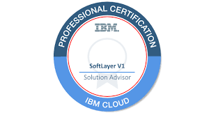
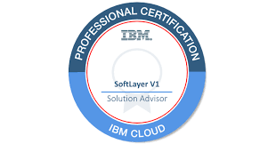

Ravi Kumar Channavajhala
Senior Director - Cloud and Devops Practice


 



Cloud Services:
- Work load re-architecture
- Hybrid cloud Management
- single pane governance and control
- Devops/Automation
- Operational intellegence and analytical monitoring
- Converged/ HC Infrastructure management
- Architectural Solutions in AWS and Azure
- Cloud Consulting
- Migration services
Welcome to Cloud Solutions
To keep pace with today’s changing digital landscape and competition, businesses must adopt to the cloud to remain relevant. According to Forrester, public cloud adoption in enterprises will cross 50% for the first time this year. No matter where you are in your cloud journey, Techwave partners to enable organizations to identify strategies to optimize traditional infrastructure, maintain speed and agility while continuing innovation via a single pane of glass deployment with visibility, governance and a full management model
One of the best sayings about cloud technology by Apple co-founder is - “I don’t need a hard disk in my computer if I can get to the server faster… carrying around these non-connected computers is byzantine by comparison.”
DevOps-To successfully implement continuous delivery, you need to change the culture of how an entire organization views software development efforts.The key to following the continuous delivery path is to continually question your own assumptions about what’s possible.DevOps is an initiative solution, streamlining and powering performance and observing real-time metrics. This is succeeded with a unified combination of the best tools in development, build, test, and deployment phases to permit a one clicks implementation.
Team information:
- Chandra Rao Jampa
- Ravi Kumar Channavajhala
- Ravi Kiran Joshi Bijumalla
You can download techwave presentation template over here..
TW Template:
Download